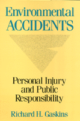

Indicts the U.S. legal system for perpetuating the belief that accidents are only legal disputes between individuals
Indicts the U.S. legal system for perpetuating the belief that accidents are only legal disputes between individuals


 Indicts the U.S. legal system for perpetuating the belief that accidents are only legal disputes between individuals
Indicts the U.S. legal system for perpetuating the belief that accidents are only legal disputes between individuals

|  |
Environmental AccidentsPersonal Injury and Public ResponsibiltiyRichard H. Gaskinspaper EAN: 978-0-87722-708-3 (ISBN: 0-87722-708-X) |
"Gaskins explores the fascinating world of environmental law suits.... [He] outlines the law, its applications, the economic and moral issues, the reform and legislative process, and, finally, he proposes international policies and responsibilities for dealing with the environment."
—Booklist
In this sweeping indictment of law and social policy regarding accidents, Richard Gaskins charges that the United States has seriously neglected its responsibility to protect public health, safety, and welfare against the hazards of modern industrial environments. The main reason for this neglect, he claims, is the antiquated view perpetuated by the American legal system: that accidents are essentially legal disputes between private individuals.
Citing the failure of our judicial system to cope with the recent surge in personal injury and "mass toxic torts," he contends that the dimensions of the accident problem could not be handled even by a perfect judicial structure. Highly publicized suits involving accidents resulting from vaccines, asbestos, Agent Orange, nuclear power, toxic wastes, defective or dangerous products, and occupational diseases dramatize the need for a better solution. The occasional million-dollar jury award simply underlines the eccentricities of the legal system, which has been aptly characterized as a form of "lottery."
Unlike earlier treatments of accidents and public policy—including economic approaches to tort law, moral philosophy, and policy reform—Gaskins provides a critical overview of each position and shows how they relate to one another. He then proposes an entirely different national approach to the emerging problems of environmental accidents, based on distinct but coordinated policies for compensation and prevention. The topic of accidents must be expanded to include not just traumatic injuries but also a larger portion of illness and disability. And because these events are so deeply embedded in modern social, technological, and environmental relations, the responsibility for future accident prevention rests with more vigorous programs for public control.
As we are beginning to learn from such problems as acid rain and the "greenhouse effect," a high-technology environment provides great wealth and convenience, but carries an inevitable toll in personal illness, disability, and long-term ecological problems. Environmental Accidents calls for a recognition of the common hazards encountered daily in the home, workplace, or natural surround, and offers new solutions for handling such threats to ourselves and to future generations.
"Gaskins’ resourceful evaluation of our tort system reveals not only bow and where it fails to resolve environmental accidents, but why it will probably continue to do so. Drawing on recent work in several disciplines, Gaskins shows why most proposed reforms serve only to make the tort system more complex, less responsive, and less efficient."
—William L. F. Felstiner, Director, American Bar Foundation
"This is a meticulous piece of scholarship. As well as providing an exhaustive coverage of the field, the work includes insights that will be an invaluable aid to those who seek to understand the systems of compensation for human disablement that have been developed, and some of the systems that might have been."
—Prof. Terence G. Ison, Osgoode Hall Law School, York University
"This provocative book presents a far-reaching conception of ‘accidents’ in contemporary society. It challenges us to think more broadly and intelligently than we have about them and about the responsibility for dealing with their public and private causes and consequences. This is a sober and beautifully constructed book of intelligent argument in a field too often dominated by overblown rhetoric."
—Harold A. Richman, University of Chicago
"Gaskins brings a breadth of vision to the topic of accidents and public policy. His coverage of literature is truly impressive: he covers several disciplines, a variety of examples (swine flu, Agent Orange, nuclear power, professional malpractice, product liability), and expands beyond American literature to include a substantial amount of British, New Zealand, and Australian literature as well. For anyone who has already worked in the area of tort law and accidents, Gaskins provides an overarching view of the field. For anyone who hasn’t, this book will serve as a congenial guide to what has heretofore been specialized conversations within separate disciplines. A magnificent piece of work."
—Deborah Stone, Brandeis University
Richard H. Gaskins is Associate Professor in the College at the University of Chicago. He is former Dean of the Graduate School of Social Work and Social Research and Director of the Law and Social Policy Program at Bryn Mawr College.
© 2015 Temple University. All Rights Reserved. This page: http://www.temple.edu/tempress/titles/617_reg.html.